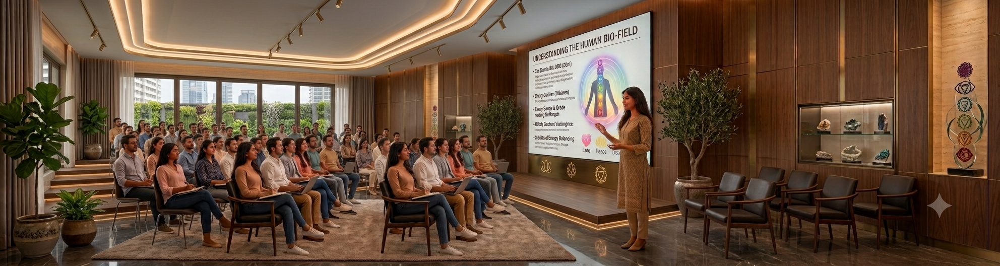

Introduction to Pranic Healing - Millions Healed. Thousands of Healers. One Global Compassionate Movement.
Learn the simple yet powerful science and art of Pranic Healing. This introduction session invites you to discover a practical, no-nonsense energy healing system that has touched millions of lives around the world — and see how it works through a live demonstration.

What this practice offers
Learn a simple, structured systemPranic Healing is a no-touch, no-drug system of energy healing that is easy to learn and apply.
Understand the science behind itExplore the principles of the human energy body and how cleansing, energising and balancing work together.
Be part of a global movementJoin a worldwide community of healers and students who have brought this practice to millions of people.
Witness a live demonstrationSee a sample healing session so you can experience firsthand how the practice is applied.
Cultivate greater wellbeingDiscover how the practice supports physical, emotional and mental health.
Develop compassion and self-awarenessPranic Healing is rooted in service and inner growth as much as technique.
Start with no prior experienceThis session is designed as a true introduction — come with curiosity, nothing else required.
Take the first step toward learningFind out how you can continue exploring Pranic Healing through further courses and practice.
How the session flows
Welcome & opening
Begin by settling in and creating a space to step away from everyday concerns.
Origins of Pranic Healing
Learn about the history and global reach of this modern energy healing system.
The science of the energy body
Understand the fundamental principles behind Pranic Healing — how energy is cleansed, energised and balanced.
The art of healing
Explore how these principles are applied in practice, and what makes Pranic Healing simple yet powerful.
Live sample healing
Witness a live demonstration of a sample Pranic Healing session for a firsthand look at the practice.
Reflection & integration
A quiet opportunity to reflect on what resonated with you and what you'd like to explore further.
Questions & closing
Ask questions, clarify your understanding of Pranic Healing, and learn how to continue your journey.
Common questions
Absolutely. This session is designed as an introduction. You don't need any previous knowledge or experience.
The session includes a live sample healing demonstration to help you understand and experience how Pranic Healing is approached. The exact format of participation is explained at the beginning of the session.
No. Come with curiosity and an open mind. The session is an opportunity to learn about and experience the approach for yourself.
No. Pranic Healing is a complementary practice and does not replace professional medical care or advice.
Pranic Healing is a simple, no-touch system of energy healing that works with the body's energy field to support cleansing, balancing and overall wellbeing.
Anyone curious about energy healing — whether you're seeking personal wellbeing, exploring a new practice, or considering becoming a healer yourself.
Nothing specific is required. Come comfortably and with an open mind.
Yes. This session is an introduction and an opportunity to experience a glimpse of the practice. If it resonates with you, you can explore Pranic Healing more deeply through further learning and practice.
Ready to experience it for yourself?
Reach out and we'll help you find the right first session, whether that's this one or another on the calendar.
Register here